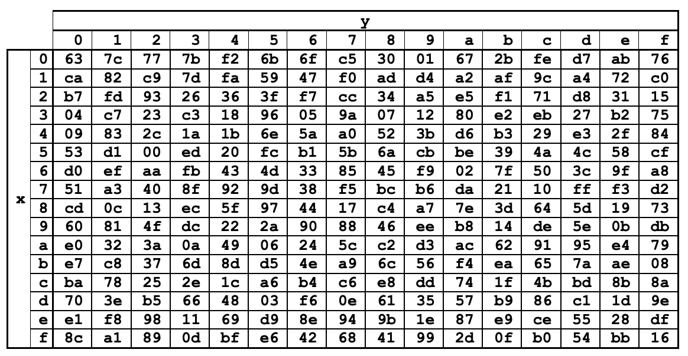
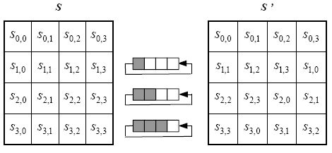
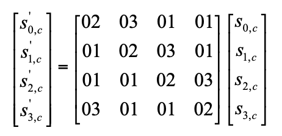
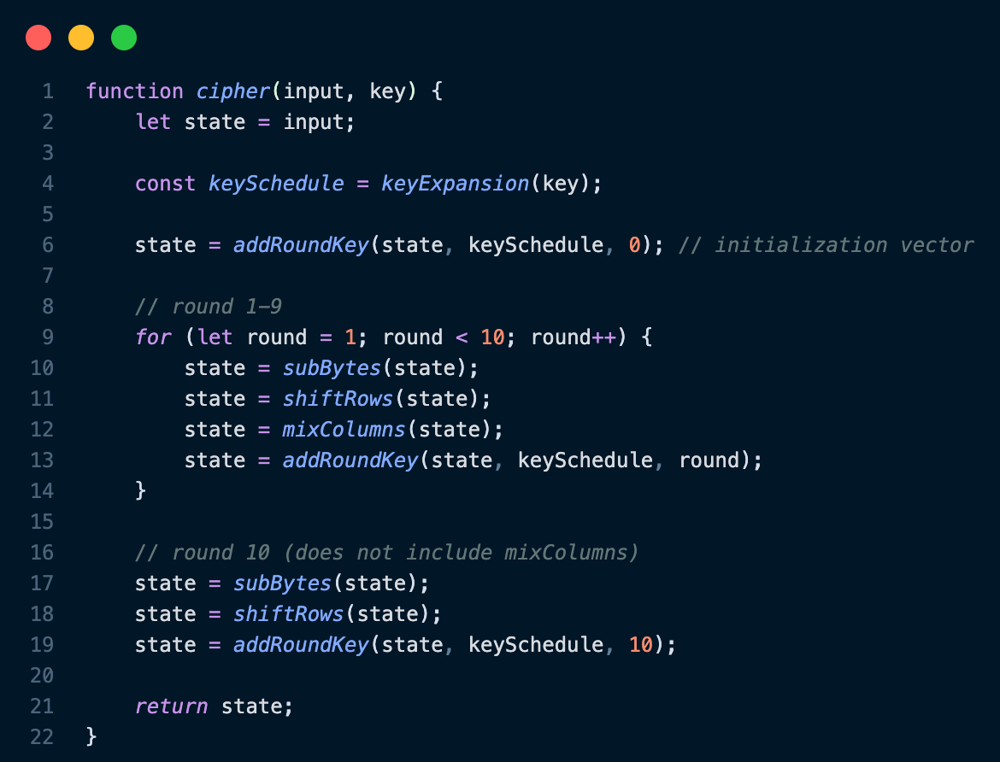

Advanced Encryption Standard (AES) is a cipher that was adopted by the NIST (National Institute for Standards and Technology) in 2001.
AES is a symmetric-key cipher, meaning that both parties must possess the same key in order to communicate.
Prior to its adoption by the NIST, AES was known as the Rijndael Cipher, and was developed by Joan Daemen and Vincent Rijmen.
During the late 1990's, the NIST decided to update the dated Data Encryption Standard (DES), which had been around since 1977.
Teams from around the world submitted their algorithms, and the Rijndael Cipher was selected for its (relative) simplicity, flexibility, and of course, security.
The Cipher
AES supports various key sizes, depending on the user's desired level of security (larger keys provide greater security).
The cipher involves performing 10, 12, or 14 rounds of encryption, corresponding to a 128-bit, 192-bit, or 256-bit key size.
During each round, four transformations are performed on the data: SubBytes, ShiftRows, MixColumns, and AddRoundKey.
These transformations scramble the data in a way that is indecipherable to anyone who does not possess the key.
AES provides significantly better security than public key techniques for equivalent key sizes, and also performs significantly better than its predecessor.
Implementation
My implementation of the AES algorithm follows
NIST specifications.
My implementation works by converting the input into an array of 16-byte "states" which are each encrypted separately.
Any input that is not a multiple of 16 bytes is padded with null characters (ASCII value = 0).
Each character in the input string is replaced by a corresponding byte according to the ASCII table.
The state is represented as a 4x4 grid of bytes. AES makes use of both substitution and permutation ciphers, as well as other steps.
Step 1: SubBytes
The first transformation performed during each round is the SubBytes transformation.
This transformation maps each value in the state to a new value according to a lookup table called an S-box.
Since a byte is 8 bits, each element of the state be represented as XY, where X is a variable representing
the first 4 bits and Y represents the second 4 bits. The new value for the two byte sequence can be found by indexing the
16x16 S-box at at row X and column Y. The S-box used for AES (shown below) was chosen to be resistent to linear and
differential cryptanalysis.

Figure 1: Sbox substitution values
Take, for example, the character "m", which has an ascii value of 109 in decimal. This corresponds to a hexadecimal value of {6d}.
In this example, we would go to the row of the S-box labeled "6" and the column labeled "d", and we would replace {6d} with {3c}.
Each of the bytes in the 4x4 grid will be replaced by a new byte according to this substitution method.
Step 2: ShiftRows
The second stage of AES is a simple permutation cipher. As the name of the transformation suggests,
this step shifts the rows of the 4x4 grid. The first row is not shifted at all, the second row is shifted
to the left by one column, the third row is shifted two columns to the left, and the fourth row is shifted
to the left by three columns.

Figure 2: ShiftRows permutation cipher
Step 3: MixColumns
This stage is where AES becomes much more complicated. During the MixColumns transformation, each column of
the state is treated as a four term polynomial of the form s(x) = b3x3 + b2x2 +
b1x + b0, where b0-3 are bytes. To perform this step, this polynomial is multiplied
by the polynomial a(x) = 3x3 + x2 + x + 2 modulo x4 + 1. Since x4 + 1 is irreducible,
any such multiplication will result in an output that is also of the form b3x3 + b2x2 +
b1x + b0, which can be converted back into a column of bytes. This polynomial has the property that for each term
in the resulting polynomial multiplication, ximod(x4 + 1) = xi mod 4. This multiplication can also be
converted to a matrix representation as shown by the figure below:

Figures 3: MixColumns matrix multiplication. c is the column index of the state.
Since each element of the state is a byte, this matrix multiplication requires repeated multiplication of bytes.
Byte multiplication for AES is also done using polynomials over finite fields. A byte can be represented by the polynomial
b7x7 + b6x6 + b5x5 + b4x4 + b3x3 + b2x2 + b1x + b0,
where b0-7 are bits in the byte. For example, the polynomial x6 + x5 + x + 1 would be equivalent to the byte {99}, which in binary is 01100011.
This multiplication is performed over GF(28) (Galois Field) by
taking the output modulo x8 + x4 + x3 + x + 1. Since this polynomial is irreducible and degree 8,
this operation is guaranteed to produce a polynomial of degree 7.
In my implementation of this, I chose to represent polynomials as arrays which contained the powers of the terms present.
For example, the polynomial x7 + x5 + x would be [7, 5, 1]. Multiplication of two such arrays can then
be easily computed by adding each element of the first array to each element of the second (like FOILing). So, performing
(x7 + x5)(x4 + x2 + 1), for example, would first converted to [7, 5]⋅[4, 2, 1],
and by adding each element of array 1 with each element of array 2, we get [11, 9, 8, 9, 7, 6]. Notice that there are two instances
of the term x9. This polynomial should be simplified, but since the coefficient of each term is a bit and can only be a
0 or 1, addition is performed as an xor, so the final array is [11, 8, 7, 6]. We still aren't finished, however; our final output
must be a polynomial of degree 7 which can be converted back into byte representation, so the final step is to compute the remainder.
To do this, my algorithm uses a technique based off polynomial long division but for my array representation of polynomials. As a reminder,
the modulus for this computation is the polynomial x8 + x4 + x3 + x + 1, which has an array representation
of [8, 4, 3, 1, 0]. While the polynomial has a degree greater than 7, the difference of degree between the two polynomials is added to each term of the mod array.
So for [11, 8, 7, 6] mod [8, 4, 3, 1, 0], the new mod array will be [11, 7, 6, 4, 3]. Then, new mod array is subtracted from the polynomial array.
Subtraction is also computed as an xor, so any number that is in only one of the arrays is added to the new polynomial
(Ex: [11, 8, 7, 6] - [11, 7, 6, 4, 3] => [8, 4, 3]). This process is repeated until the polynomial has a degree of less than 8.
Step 4: AddRoundKey
The final step of the cipher is to XOR the round key with each column of the state.
Putting it all together
For AES-128, there are 10 rounds of encryption performed on the data. After performing key expansion to get the key schedule,
the state is XORed with the original key. Then, each of the aforementioned steps are performed 10 times, with the exception of
MixColumns, which is not applied during the last round.

Figure 4: AES-128 cipher algorithm in JavaScript